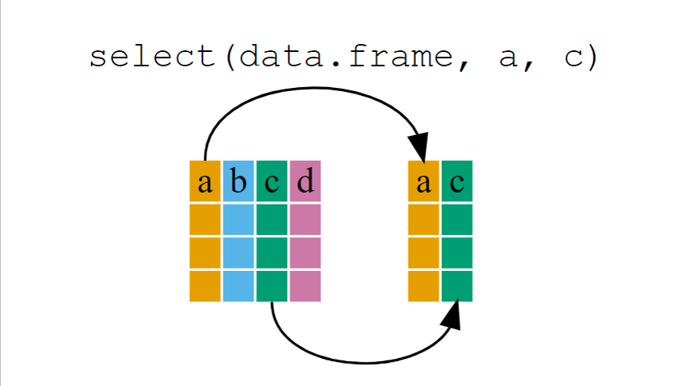
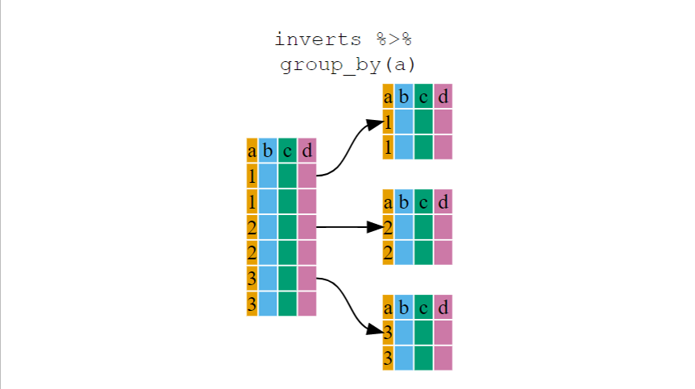
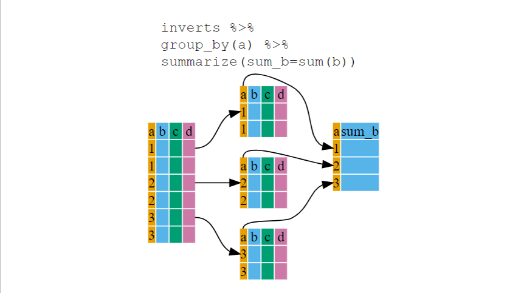
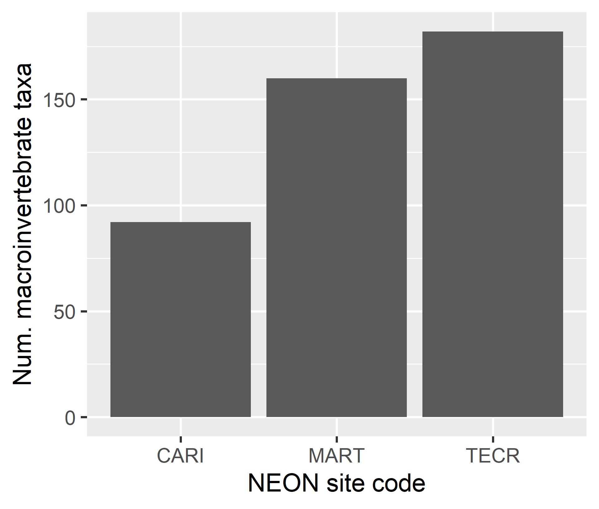
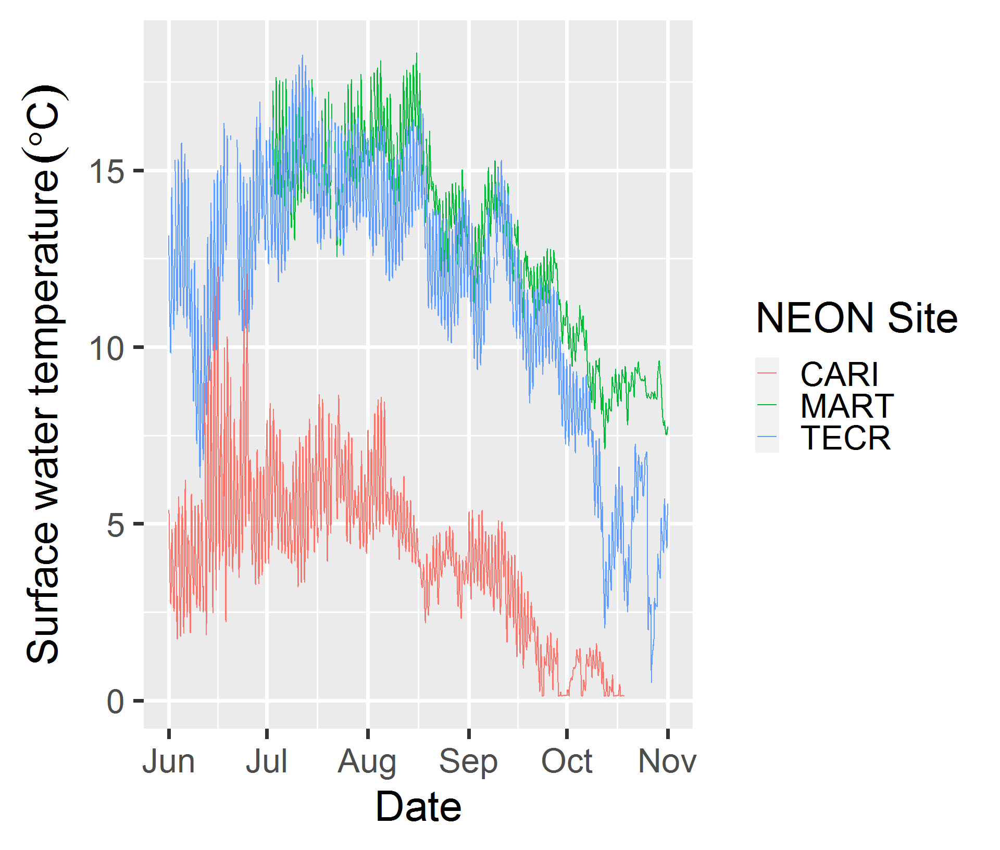
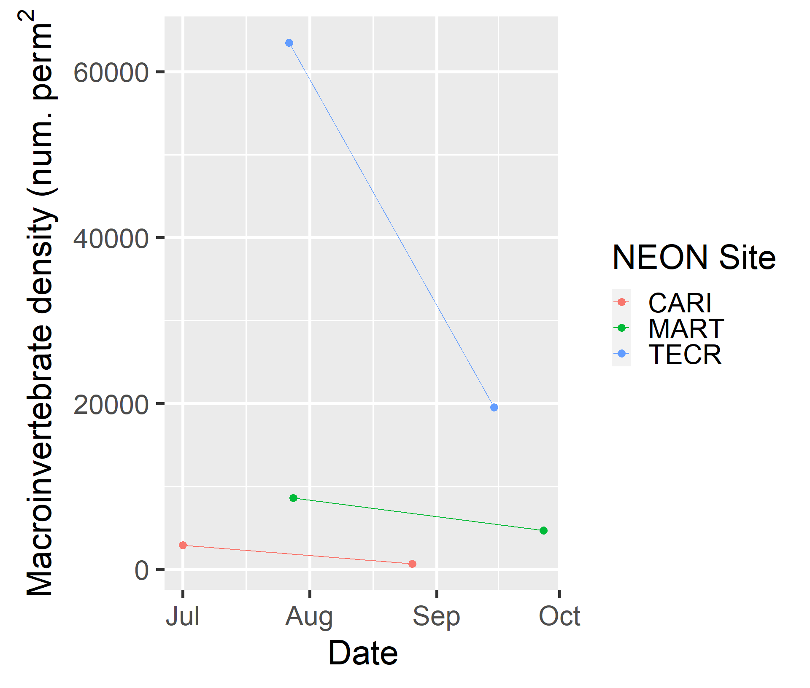
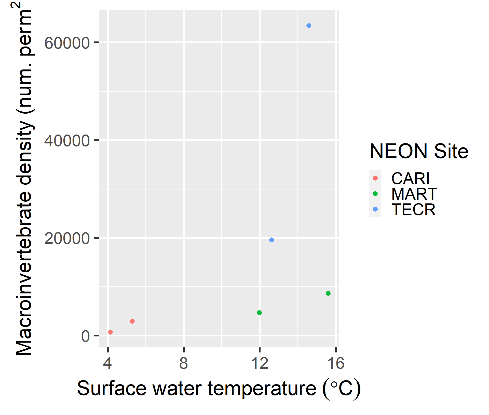

How are organisms affected by their environment? Answering this question requires connecting data of different types from different sources and measured at different spatial and temporal scales. Before any statistical analysis can begin, scientists need the ability to manipulate data tables in a reproducible way.
Manipulation of data tables can mean many things; we often select certain observations (rows) or variables (columns), we often group the data by a certain variable(s), or we even calculate summary statistics. Base R has functions for most kinds of data table manipulation, but the methods are sometimes idiosyncratic and difficult to learn.
Enter the tidyverse, a set of
packages designed to work together and follow general rules of data
science. We have already met one core
package in this universe- ggplot2 and
another for working with dates- lubridate. In
this lesson we will meet two more: dplyr, a package
for manipulating and summarizing data within one table and tidyr, a package
for reformatting and combining data tables.
In this lesson learners will:
%>%)select()filter()group_by()summarize()mutate()left_join(), right_join(),
full_join(), inner_join()pivot_wider()and pivot_longer()rename()count()arrange() and desc()Before beginning this lesson you should have completed the lesson Simple graphs with ggplot2 and any prerequisites therein. We will also use parts of Controlling program flow.
Before you begin:
Type (or copy) this into your R script. Then run it in the Console.Try to solve the problem by writing R code into your script. Check your answer by clicking:
The code that solves the challenge will appear here.Along with an explanation.
In this lesson we will be working on an analysis of macroinvertebrate diversity at three NEON aquatic sites: Caribou Creek, Alaska (CARI), Martha Creek, Washington (MART), and Teakettle Creek, California (TECR). You can see a map of these sites on the NEON website. Our goal is to evaluate which site has the highest summer macroinvertebrate diversity and determine whether macroinvertebrate abundance is related to water temperature over the course of the summer.
Just like in the lesson Controlling program flow, we are going to download and work with data from NEON aquatic sites: However in this lesson we will be working with macroinvertebrate collections (DP1.20120.001) in addition to surface water temperature data (DP1.20053.001).
We will download data from NEON using the
loadByProduct() function in the neonUtilities
package. We need to specify the product ID number, sites and dates for
which we want data and then type y when prompted to
download the data at the command line.
library(neonUtilities)
# Define dates for download: June 1 - Oct 31, 2021
# but we need to start before June 1 to get the entire month of June
startdate <- "2021-05-31"
enddate <- "2021-10-31"
# Define the sites to download
# TECR = Teakettle Creek, MART = Martha Creek, CARI = Caribou Creek
sites <- c("TECR", "MART", "CARI")
# Macroinvertebrate observations
inverts_list <- loadByProduct(dpID = "DP1.20120.001",
site = sites,
startdate = startdate,
enddate = enddate)
# Temperature in surface water
watertemp_list <- loadByProduct(dpID = "DP1.20053.001",
site = sites,
startdate = startdate,
enddate = enddate)You should now have a two new objects named inverts_list
and watertemp_list in the Environment panel.
watertemp_list is the same object we downloaded in lesson
Controlling program flow. Let’s
extract the data frame that contains 30-minute temperature averages from
it.
# Extract 30 min temperature averages
# and save as a separate data frame
TSW_30min <- watertemp_list$TSW_30mininverts_list should be a list with nine elements. To
learn what these objects contain we should read the NEON User Guide to
Aquatic Macroinvertebrate Collection on the NEON
Documentation page for these data. From this guide we can learn some
key information about the way these data are collected and reported. The
three sites we are using are considered “wadeable streams”. According to
the documentation, macroinvertebrate samples at these sites represent a
patch of stream bottom near the midpoint of the stream reach (between
the two upstream and downstream automated water samplers). However there
may be up to two different habitats sampled if the stream is not
homogenous. There are three sampling bouts each season:
Each sample is sent to an expert taxonomy lab, where the samples are
sorted into 1 mm size classes and then and identified to the lowest
taxonomic rank possible (usually Genus or species). These
identifications are standardized by NEON and then reported in the
inv_taxonomyProcessed, which contains counts of each taxon
in each size class. The documentation notes that… | “In some cases, the
taxonomy lab reported counts from the same size class twice, and numbers
should be summed. This is indicated in the field
sizeCategory, where the sizeClass is appended
with a, b, c, etc. Depending on the use case, data users may want to sum
all sizeClass and sizeCategory per
sampleID + scientificName prior to data
analysis.”
Therefore, each sampleID record in the
inv_fieldData table can correspond to multiple records in
inv_taxonomyProcessed table, which contains one record for
each scientificName and size‐class combination.
Since we are interested in estimating abundance, we should also be
aware that, according to the documentation, “Count data can be found in
the field estimatedTotalCount, which is corrected for
subsampling at the external lab, but is NOT corrected for benthic area.
Data users will need to refer to the benthicArea presented
in the inv_fieldData table and apply this correction to get
the number of organisms per square meter of stream, lake, or river
bottom. All taxon records from a sample should be summed and divided by
the benthicArea prior to reporting the total abundance per
m^2.
From this information we learn that we will need two of the objects
in the inverts_list to complete our analysis:
inv_fieldData contains data on when and where the
invertebrate samples were collectedinv_taxonomyProcessed contains taxonomic information
about which taxa were collected in each sampleQuality control information is included in the
inv_persample data frame, but we won’t be using this in
this lesson.
Let’s extract each of these data frames from the downloaded list objects into separate data frame objects.
# Extract invertebrate collections
inv_fieldData <- inverts_list$inv_fieldData
# Extract taxonomic information
inv_taxa <- inverts_list$inv_taxonomyProcessedNow we have a three data frames. Click on each one in the Environment panel to see what they contain:
inv_fieldData includes the dates and locations where
invertebrates were sampled at each site. Each row is a particular
sampling event.inv_taxa includes the invertebrate taxa that were found
in each sample. Each row is a particular taxon in a particular sampling
event.TWS_30min includes water temperature data from upstream
and downstream sensors at each site. Each row contains average sensor
data during a 30 minute time period.dplyr package: data frame manipulationThe dplyr
package provides a number of very useful functions for manipulating data
frames in a way that will reduce repetition, reduce the probability of
making errors, and probably even save you some typing. As an added
bonus, you might even find the dplyr grammar easier to
read.
Here we’re going to cover 5 of the most commonly used functions and
demonstrate how to use pipes (%>%) to combine them.
select()filter()group_by()summarize()mutate()We’re going to demonstrate how to use these functions with the
inv_taxa data frame.
If you have have not installed this package earlier, please do so:
install.packages('dplyr')Now let’s load the package:
library("dplyr")
Attaching package: 'dplyr'The following objects are masked from 'package:stats':
filter, lagThe following objects are masked from 'package:base':
intersect, setdiff, setequal, unionYou likely saw several messages about objects being “masked” when you
loaded this packages. This means that the package contains functions
that have the same names as functions in base R or other packages that
you already loaded. When you call one of those function, R will assume
you want the version from the package you loaded more recently, in this
case, dplyr.
select() to extract columnsThe inv_taxa data frame contain a lot of columns! Let’s
create a new data frame just with a few of the columns that we want to
work with. The select() function will keep only the
variables indicated.
Note that the first argument in select() is a
.data arguments, which takes the name of the data frame we
want to operate on. After the name of the dataframe, we can write the
name of each column to keep. These column names are not
quoted. As in any function, arguments can be broken across lines, so
long as there is a comma at the end of each line.
inverts <- select(inv_taxa, siteID, sampleID,
scientificName, taxonRank, phylum, class, order, family, genus,
sizeClass, estimatedTotalCount)
If we want to remove columns we can use a minus sign (-)
in front of the column name.
inverts_notaxa <- select(inverts, -phylum, -class, -order, -family, -genus)In the Environment panel, click on inverts and
inverts_notaxa to compare the columns present in these data
frames.
Above we used ‘normal’ grammar, but the strengths of
dplyr lie in combining several functions using
pipes. In computer programming , a pipe composes
functions; it takes the output of the first function and passes it to
the first input in the second function.
Since the pipes grammar is unlike anything we’ve seen in R before, let’s repeat what we’ve done above using pipes.
inverts <- inv_taxa %>% select(siteID, sampleID, scientificName,
taxonRank, phylum, class, order, family, genus,
sizeClass, estimatedTotalCount)To help you understand why we wrote that in that way, let’s walk
through it step by step. First we summon the inv_taxa data
frame and pass it on, using the pipe symbol %>%, to the
next function, select(). If you open the help file for
select() (type ?select into the Console), you
will see that the first argument in select() is
.data which takes a data frame. Therefore, we don’t need to
specify a data object inside the select() function because
it received that from the previous pipe.
filter() to subset rowsSuppose the next step in our analysis is to restrict our analysis to
only insects. Insects are in the class Insecta. Previously we learned
that we could subset the rows of a data frame using the base R function
subset().
insects <- subset(inverts, class == "Insecta")Here’s how to do the same operation using filter() from
the dplyr package.
insects <- inverts %>% filter(class == "Insecta")Or, if we don’t need the intermediate inverts data
frame, we could have performed both operations at once using a pipe:
insects <- inv_taxa %>%
select(siteID, sampleID, scientificName,
taxonRank, phylum, class, order, family, genus,
sizeClass, estimatedTotalCount) %>%
filter(class == "Insecta")Notice that for these two functions, the order in which we do them doesn’t matter. We could have written:
insects <- inv_taxa %>%
filter(class == "Insecta") %>%
select(siteID, sampleID, scientificName,
taxonRank, order, family, genus,
sizeClass, estimatedTotalCount)Actually- writing the operations in this order means that we no
longer need the columns for phylum and class, since insects
should all belong to the same order, Insecta.
The filter() function can be used with multiple filters,
each provided as an argument and separated by commas:
insects_big_MART <- inverts %>%
filter(class == "Insecta", sizeClass >= 4, siteID == "MART") %>%
select(-siteID, -phylum, -class)What do you think the code above did? Check your guess by clicking on
the insects object in the Environment panel.
insects_big_MART was filtered from the
inverts data frame and now contains all observations of
insectes where specimens were at least 4 mm long and came from samples
collected at the Martha Creek NEON site (“MART”). It contains all
columns that were in inverts except for
siteID, phylum and class.
The first argument in any dplyr function that can
manipulate data is a .data argument that takes a data
frame. This is why the pipe (%>%) works to compose
dplyr functions together- it is passing the output of one
function (a data frame) to the first argument of the next function,
which is always .data.
Thus, a pipe will work with any function whose first argument takes a
data frame. This includes ggplot() and functions in the
tidyr package, which we will learn about later in this
lesson.
Write a single command (which can span multiple lines and includes
pipes) that takes inv_taxa as an input and will produce a
four-column data frame showing the abundance of different size classes
of Arachnid taxa from samples collected at the Caribou Creek NEON site
(“CARI”). The four columns in the output should be:
sampleID,scientificName,
sizeClass, estimatedTotalCount. You will need
to use the siteID and class columns in the
filtering step.
arachnids_CARI <- inv_taxa %>%
filter(class == "Arachnida", siteID == "CARI") %>%
select(sampleID, scientificName, sizeClass, estimatedTotalCount)Note: The order of operations is very important in
this case. If we used select() first, filter()
would not be able to find the variables class or
siteID because we would have removed it in the previous
step.
When working in a script in RStudio, you can use tab-completion
inside the select() and filter() functions to
choose columns in the dataframe, so long as the preceeding code
specifies a data source.
For example, if you have typed the following
inv_taxa %>%
filter(pressing tab when your cursor is inside the open
parentheses will bring up a list of all of the columns in
inv_taxa that you can select from.
group_by() and
summarize() to perform operations within
groupsSuppose we want to count the number of individuals of each invertebrate taxon found in each sample. We know that some taxa can occur in multiple size classes- for example, let’s look at the mayfly taxon Afghanurus sp. found at the Martha Creek site:
inverts %>%
filter(siteID == "MART", scientificName == "Afghanurus sp.") %>%
select(sampleID, scientificName, sizeClass, estimatedTotalCount) sampleID scientificName sizeClass estimatedTotalCount
1 MART.20210728.HESS.6 Afghanurus sp. 4 1
2 MART.20210728.HESS.6 Afghanurus sp. 5 1
3 MART.20210728.HESS.8 Afghanurus sp. 4 1
4 MART.20210728.SURBER.3 Afghanurus sp. 2 4
5 MART.20210728.SURBER.5 Afghanurus sp. 3 1
6 MART.20210728.SURBER.3 Afghanurus sp. 5 2
7 MART.20210728.SURBER.4 Afghanurus sp. 2 9
8 MART.20210728.SURBER.2 Afghanurus sp. 3 1We can see that two size classes were recorded during the
MART.20210728.HESS.6 sampling event- one individual in the
4 mm size class and one individual in the 5 mm size class. If we want a
table that summarizes the total abundance of each taxon regardless of
size class, then we would need to add these two counts together.
We can do this using group_by() and
summarize().
The group_by() function is used to divide a data frame
into subsets based on a set of criteria.
Here is the structure of a regular data frame:
str(inverts)'data.frame': 3045 obs. of 11 variables:
$ siteID : chr "MART" "MART" "MART" "MART" ...
$ sampleID : chr "MART.20210728.HESS.7" "MART.20210728.SURBER.2" "MART.20210728.HESS.6" "MART.20210728.HESS.6" ...
$ scientificName : chr "Orthocladius sp." "Parorthocladius sp." "Sialis sp." "Afghanurus sp." ...
$ taxonRank : chr "genus" "genus" "genus" "genus" ...
$ phylum : chr "Arthropoda" "Arthropoda" "Arthropoda" "Arthropoda" ...
$ class : chr "Insecta" "Insecta" "Insecta" "Insecta" ...
$ order : chr "Diptera" "Diptera" "Megaloptera" "Ephemeroptera" ...
$ family : chr "Chironomidae" "Chironomidae" "Sialidae" "Heptageniidae" ...
$ genus : chr "Orthocladius" "Parorthocladius" "Sialis" "Afghanurus" ...
$ sizeClass : num 3 2 3 4 5 9 1 1 1 3 ...
$ estimatedTotalCount: num 2 1 3 1 2 2 1 72 1 2 ...Here is the structure of a grouped data frame:
str(inverts %>% group_by(siteID))gropd_df [3,045 x 11] (S3: grouped_df/tbl_df/tbl/data.frame)
$ siteID : chr [1:3045] "MART" "MART" "MART" "MART" ...
$ sampleID : chr [1:3045] "MART.20210728.HESS.7" "MART.20210728.SURBER.2" "MART.20210728.HESS.6" "MART.20210728.HESS.6" ...
$ scientificName : chr [1:3045] "Orthocladius sp." "Parorthocladius sp." "Sialis sp." "Afghanurus sp." ...
$ taxonRank : chr [1:3045] "genus" "genus" "genus" "genus" ...
$ phylum : chr [1:3045] "Arthropoda" "Arthropoda" "Arthropoda" "Arthropoda" ...
$ class : chr [1:3045] "Insecta" "Insecta" "Insecta" "Insecta" ...
$ order : chr [1:3045] "Diptera" "Diptera" "Megaloptera" "Ephemeroptera" ...
$ family : chr [1:3045] "Chironomidae" "Chironomidae" "Sialidae" "Heptageniidae" ...
$ genus : chr [1:3045] "Orthocladius" "Parorthocladius" "Sialis" "Afghanurus" ...
$ sizeClass : num [1:3045] 3 2 3 4 5 9 1 1 1 3 ...
$ estimatedTotalCount: num [1:3045] 2 1 3 1 2 2 1 72 1 2 ...
- attr(*, "groups")= tibble [3 x 2] (S3: tbl_df/tbl/data.frame)
..$ siteID: chr [1:3] "CARI" "MART" "TECR"
..$ .rows : list<int> [1:3]
.. ..$ : int [1:694] 2352 2353 2354 2355 2356 2357 2358 2359 2360 2361 ...
.. ..$ : int [1:887] 1 2 3 4 5 6 7 8 9 10 ...
.. ..$ : int [1:1464] 888 889 890 891 892 893 894 895 896 897 ...
.. ..@ ptype: int(0)
..- attr(*, ".drop")= logi TRUEYou will notice that the structure of the data frame where we used
group_by() is called a grouped_df and is not
quite the same as the original inverts (a
data.frame). A grouped_df can be thought of as
a list where each item in the listis a
data.frame which contains only the rows that correspond to
a particular value in the siteID column (at least in the
example above). You can see this at the bottom of the output above
showing the groups attribute (-attr(*, "groups")) is based
on the siteID column which is divided into three groups of
.rows.

Combining group_by() with summarize() will
allow us split the inverts data frame into multiple pieces,
then run functions on each piece separately (e.g. mean() or
sum()). The output will bring the summaries back together
into a single data frame.
# Calculate the total abundance of all inverts sampled at each site
inverts_bysite <- inverts %>%
group_by(siteID) %>%
summarize(total = sum(estimatedTotalCount))
inverts_bysite# A tibble: 3 x 2
siteID total
<chr> <dbl>
1 CARI 3780
2 MART 9804
3 TECR 61789
That allowed us to calculate the total number of individuals from samples at each site, but what if we want the total calculated for each taxon in each sample?
The function group_by() allows us to group by multiple
variables. Let’s group by siteID and
sampleID.
inverts_bysample <- inverts %>%
group_by(siteID, sampleID) %>%
summarize(total = sum(estimatedTotalCount))
inverts_bysample# A tibble: 48 x 3
# Groups: siteID [3]
siteID sampleID total
<chr> <chr> <dbl>
1 CARI CARI.20210701.KICKNET.1 184
2 CARI CARI.20210701.KICKNET.2 2
3 CARI CARI.20210701.KICKNET.3 229
4 CARI CARI.20210701.KICKNET.4 313
5 CARI CARI.20210701.KICKNET.5 455
6 CARI CARI.20210701.SURBER.1 982
7 CARI CARI.20210701.SURBER.2 399
8 CARI CARI.20210701.SURBER.3 355
9 CARI CARI.20210826.KICKNET.1 50
10 CARI CARI.20210826.KICKNET.2 44
# i 38 more rowsNow we have the total abundance across all taxa within each sample,
but by keeping siteID in the group_by()
function, it is also returned in the output.
Use group_by() and summarize() to calculate
the total number of individuals in each taxon
(scientificName) in each sample.
inverts_bytaxa <- inverts %>%
group_by(siteID, sampleID, scientificName) %>%
summarize(total = sum(estimatedTotalCount))Click on inverts_bytaxa in the Environment panel to
verify that this worked. You should see a four column data frame with
2024 rows.
NOTE: You don’t need to include siteID in the
group_by() function because this information is already
encoded in the sampleID column. However, doing so will make
it easier to see which samples come from each site when we use this data
frame later in the analysis.
That is already quite powerful, but it gets even better! You’re not
limited to defining 1 new variable in summarize(). You can
include as many summary statistics as you wish. Remember that each
calculation is performed within the subsets defined by
group_by().
Let’s calculate a the mean length of individuals in each taxon and sample using a weighted average where we multiple the size class by the number of individuals in each size class, then divide by the total number of individuals.
For example, what if we want
sampleID scientificName sizeClass estimatedTotalCount
1 MART.20210728.HESS.6 Afghanurus sp. 4 1
2 MART.20210728.HESS.6 Afghanurus sp. 5 1
3 MART.20210728.HESS.8 Afghanurus sp. 4 1
4 MART.20210728.SURBER.2 Afghanurus sp. 3 1
5 MART.20210728.SURBER.3 Afghanurus sp. 2 4
6 MART.20210728.SURBER.3 Afghanurus sp. 5 2
7 MART.20210728.SURBER.4 Afghanurus sp. 2 9
8 MART.20210728.SURBER.5 Afghanurus sp. 3 1to show the following:
`summarise()` has grouped output by 'scientificName'. You can override using
the `.groups` argument.# A tibble: 6 x 4
# Groups: scientificName [1]
scientificName sampleID total size_mean
<chr> <chr> <dbl> <dbl>
1 Afghanurus sp. MART.20210728.HESS.6 2 4.5
2 Afghanurus sp. MART.20210728.HESS.8 1 4
3 Afghanurus sp. MART.20210728.SURBER.2 1 3
4 Afghanurus sp. MART.20210728.SURBER.3 6 3
5 Afghanurus sp. MART.20210728.SURBER.4 9 2
6 Afghanurus sp. MART.20210728.SURBER.5 1 3 To calculate this weighted average, we should take the sum of the
product of the sizeClass and
estimatedTotalCount columns, then divide by the total
number of individuals.
inverts_bytaxa <- inverts %>%
group_by(siteID, sampleID, scientificName) %>%
summarize(total = sum(estimatedTotalCount),
size_mean = sum(sizeClass*estimatedTotalCount)/total)
# view the first 10 rows
inverts_bytaxa[1:10, ]# A tibble: 10 x 5
# Groups: siteID, sampleID [1]
siteID sampleID scientificName total size_mean
<chr> <chr> <chr> <dbl> <dbl>
1 CARI CARI.20210701.KICKNET.1 Ameletus sp. 3 3
2 CARI CARI.20210701.KICKNET.1 Baetis foemina 4 3
3 CARI CARI.20210701.KICKNET.1 Cinygmula sp. 1 3
4 CARI CARI.20210701.KICKNET.1 Corynoneura sp. 1 2
5 CARI CARI.20210701.KICKNET.1 Cricotopus sp. 1 4
6 CARI CARI.20210701.KICKNET.1 Cricotopus/Orthocladius sp. 6 2.67
7 CARI CARI.20210701.KICKNET.1 Diamesa sp. 63 2.67
8 CARI CARI.20210701.KICKNET.1 Enchytraeidae sp. 1 3
9 CARI CARI.20210701.KICKNET.1 Eukiefferiella claripennis gr. 3 2
10 CARI CARI.20210701.KICKNET.1 Eukiefferiella devonica gr. 3 2 Notice that when calculating mean_size we were able to
refer to the total column that was already calculated for
each group, rather than needing to repeat the
sum(estimatedTotalCount) operation.
The “split-apply-combine” functionality of
group_by() and summarize() can also be
implemented in base R and other packages (see plyr and
purrr if interested), but the functions used in base R are
not as consistent and easy to understand (e.g. *apply(),
by(), aggregate()). Thus, we will stick to
dplyr for these lessons. Interested readers can check out
additional resources in the references section of this lesson.
Calculate the mean, minimum and maximum surface water temperature at
each site in the TSW_30min data frame, but only using good
data where finalQF == 0.
HINT: Think about the steps you need to take and how these can be
accomplished using the dplyr functions you have learned so
far. Try to write each step separately first, then link them together
with pipes.
Here is one way to solve the problem with each step as a separate line of code:
# Filter the temperature data to good observations
TSW_30min_good <- filter(TSW_30min, finalQF == 0)
# Group the good data by site then summarize by calculating
# mean, minimum and maximum of the temperature variables
TSW_bysite <- group_by(TSW_30min_good, siteID) %>%
summarize(temp_mean = mean(surfWaterTempMean),
temp_min = min(surfWaterTempMinimum),
temp_max = max(surfWaterTempMaximum)
)Here’s how to solve this problem without creating an intermediate data frame:
# Filter the temperature data to good observations
TSW_bysite <- TSW_30min %>%
filter(finalQF == 0) %>%
group_by(siteID) %>%
summarize(temp_mean = mean(surfWaterTempMean),
temp_min = min(surfWaterTempMinimum),
temp_max = max(surfWaterTempMaximum)
)
TSW_bysite# A tibble: 3 x 4
siteID temp_mean temp_min temp_max
<chr> <dbl> <dbl> <dbl>
1 CARI 3.97 -0.313 163.
2 MART 12.8 6.89 20.5
3 TECR 11.6 1.76 18.7If you completed the challenge above, the maximum temperature for the Caribou Creek temperature seems suspicious if the units are degrees Celsius.
Let’s use what we have learned to investigate where this large value
might be coming from. In the code below, the starts_with()
selector inside the select() function looks for any column
names in TWS_30min that begin with
surfWaterTempM and will select all columns that match.
# Filter TSW_30min to rows where max temp seems too high
# Only print useful columns
TSW_30min %>%
filter(surfWaterTempMaximum > 30) %>%
select(siteID, horizontalPosition, startDateTime,
starts_with("surfWaterTempM"),
finalQF) siteID horizontalPosition startDateTime surfWaterTempMean
1 CARI 101 2021-06-08 02:00:00 6.089
surfWaterTempMinimum surfWaterTempMaximum finalQF
1 4.222 163.284 0Let’s go back to the list of surface water temperature data
(watertemp_list) and see if this error occurs in the data
summarized every 5 minutes. These data are in the TSW_5min
element of this list. So, instead of pulling this data frame out and
saving it as a new object, we could use a pipe to extract and manipulate
it:
watertemp_list$TSW_5min %>%
filter(siteID == "CARI", horizontalPosition == 101, surfWaterTempMaximum > 30) %>%
select(siteID, horizontalPosition, startDateTime,
starts_with("surfWaterTempM"),
finalQF) siteID horizontalPosition startDateTime surfWaterTempMean
1 CARI 101 2021-06-08 02:25:00 6.878
surfWaterTempMinimum surfWaterTempMaximum finalQF
1 4.222 163.284 0From this we see that there must have been an erroneous measurement
taken sometime between 2:25 and 2:30am on June 8, 2021. This highlights
the importance of summarizing any data you are working with and looking
for suspicious values. Even highly quality-controlled data, like those
provided by NEON, are subject to errors. You can use
filter() to screen for observations that fall above or
below expected values without having to scroll through all the data
yourself.
Let’s continue working with the surface water temperature data to create a summary data frame that will be useful when analyzing how macroinvertebrate abundance varies with temperature. Since the macroinvertebrate data are collected only up to three times per year, we could either try to match up the temperature data collected around the same time that each macroinvertebrate sample was collected, or we could summarize the temperature records in a way that align with these data collection points, for example, by creating a monthly or weekly temperature summary immediately prior to each collection date.
In either case we need columns in the temperature data that will allow us to work directly with the month and dates when measurements were recorded.
mutate() to calculate new
columnsRecall from prior lessons that we can use the ymd_hms()
function from the lubridate package to convert the
startDateTime and endDateTime columns in
TSW_30min to a date-time class from which we can then
extract temporal information.
Load the lubridate() package so that we have access to
these functions:
library(lubridate)In base R we used $ to create a new column in a data
frame:
# Set the startDateTime column to be a date-time class
TSW_30min$startDateTime <- ymd_hms(TSW_30min$startDateTime)Warning: 980 failed to parse.# Save the month as a new column
TSW_30min$month <- month(TSW_30min$startDateTime)These same operations can be accomplished using the
mutate() function, but they can be done in one
operation:
TSW_30min <- mutate(TSW_30min,
startDateTime = ymd_hms(startDateTime),
month = month(TSW_30min$startDateTime) )We reassigned the output of mutate() back to the same
data object TSW_30min so that the changes we made would be
saved.
We can add as many new columns as we’d like inside the
mutate() function. Here’s an example that uses
ifelse() to identify summer months.
TSW_30min <- mutate(TSW_30min,
startDateTime = ymd_hms(startDateTime),
month = month(TSW_30min$startDateTime),
season = ifelse(month>5 & month<9, "summer", "not summer") )Add a column to TSW_30min that identifies the date of
the start of the time interval for each observation.
HINT: Use the date() function on
startDateTime.
Assuming that you already have converted startDateTime
to a date-time class, the following should work:
TSW_30min <- mutate(TSW_30min,
date = date(startDateTime))Create a table named invert_samples based on
inv_fieldData that contains information about the
macroinvertebrate samples in the inverts data table. This
table should contain only the following columns: siteID,
sampleID, collectDate,
collect_ymd, boutNumber,
habitatType, samplerType,
substratumSizeClass, benthicArea. The
collectDate column should be a date-time class that include
both the collection data and time (as found in the original
inv_fieldData$collectDate) whereas the
collect_ymd column should be newly created using
date() and should only contain the year-month-day.
# Create a table that contains relevant info about each invert sample
invert_samples <- inv_fieldData %>%
select(siteID, sampleID, collectDate, boutNumber,
habitatType, samplerType, substratumSizeClass, benthicArea) %>%
mutate(collectDate = ymd_hms(collectDate),
collect_ymd = date(collectDate))Let’s examine the dates when macroinvertebrates were sampled at each site using the data table you created in the last challenge. The code below shows two ways to tally observations:
The n() function will return the number of observations
(rows) in each group. unique() returns a vector of distinct
values found in the habitatType columns within each group.
Applying the length() function to the output of
unique() counts how many distinct values there are, which
gives the number of distinct habitat types sampled.
# Group the samples by collection date and site
# Tally the number of samples and count the number
# of distinct types of habitat
invert_samples %>%
group_by(siteID, collect_ymd) %>%
summarize(num_samples = n(),
num_habitats = length(unique(habitatType)))# A tibble: 6 x 4
# Groups: siteID [3]
siteID collect_ymd num_samples num_habitats
<chr> <date> <int> <int>
1 CARI 2021-07-01 8 2
2 CARI 2021-08-26 8 2
3 MART 2021-07-28 8 2
4 MART 2021-09-27 8 3
5 TECR 2021-07-27 8 1
6 TECR 2021-09-15 8 1From this table we can see that each site was sampled twice during the year and each sampling event contains eight separate samples collected, presumably from different locations within the creek.
Use group_by() and summarize() on the
inverts data frame to create a new data frame named
inverts_bysample which contains one row for each sample and
summarizes across all taxa collected. It should have columns:
num_taxa = total number of distinct taxa based on the
scientificName columnabundance= total abundance based on the
estimatedTotalCount columnYour code should generate this table and it will have 48 rows:
# A tibble: 8 x 3
sampleID num_taxa abundance
<chr> <int> <dbl>
1 CARI.20210701.KICKNET.1 31 184
2 CARI.20210701.KICKNET.2 2 2
3 CARI.20210701.KICKNET.3 25 229
4 CARI.20210701.KICKNET.4 40 313
5 CARI.20210701.KICKNET.5 31 455
6 CARI.20210701.SURBER.1 35 982
7 CARI.20210701.SURBER.2 29 399
8 CARI.20210701.SURBER.3 32 355# Create a table that summarizes the abundance and diversity
# of macroinvertebrates in each sample
inverts_bysample <- inverts %>%
group_by(sampleID) %>%
summarize(num_taxa = length(unique(scientificName)),
abundance = sum(estimatedTotalCount))If we want to relate differences in macroinvertebrate abundance and
diversity to water temperature we need a way to match records in the
inverts_bysample to temperature measurements in the
TSW_30min table. But, inverts_bysample doesn’t
have any information about the dates or times when these samples were
collected, which we will need to get the appropriate temperature
measurements from TSW_30min.
Where can we get information about the times when invertebrates were
sampled? From the invert_samples table. We just need a way
to join the information in these two tables together…
To join information from two data tables we need to find at least one column in each table that will determine which rows should be matched up. This column is called a key.
What column should we use as the key to join
inverts_bysample and invert_samples?
Both tables have a sampleID column which uniquely
identifies a sample. We should use this to join the two tables.
There are several types of join operations, depending on which rows
and columns need to show up in the output. We specify a join using the
function *_join(x, y) where x and
y are both data frames and * takes the place
of the type of join we want:
left_join() keeps all rows in x.
y then columns from
y will be NA.x matches multiple rows in y,
then the output will contain one row for each match.right_join() keeps all rows in y.
x then columns from
x will be NA.y matches multiple rows in x,
then the output will contain one row for each match.full_join() keeps all rows in both x and
y.
NA.x
that have a match in y and are specified by
inner_join()By default, the join() function will try to use any
columns with the same name as the keys. You can prevent this behavior by
using the by argument and giving it a character vector
containing the columns which should be used as the keys.
Let’s join the invert_samples and
inverts_bysample data frames by the sampleID
column.
# Join all rows in invert_samples to matches in inverts_bysample
# use the sampleID column as the key to match rows
samples <- left_join(invert_samples, inverts_bysample, by = "sampleID")
# View the first few rows
head(samples) siteID sampleID collectDate boutNumber habitatType
1 MART MART.20210728.HESS.8 2021-07-28 17:33:00 2 pool
2 MART MART.20210728.SURBER.5 2021-07-28 17:33:00 2 riffle
3 MART MART.20210728.SURBER.4 2021-07-28 17:33:00 2 riffle
4 MART MART.20210728.HESS.6 2021-07-28 17:33:00 2 pool
5 MART MART.20210728.SURBER.2 2021-07-28 17:33:00 2 riffle
6 MART MART.20210728.HESS.7 2021-07-28 17:33:00 2 pool
samplerType substratumSizeClass benthicArea collect_ymd num_taxa abundance
1 hess boulder 0.086 2021-07-28 45 218
2 surber cobble 0.093 2021-07-28 29 86
3 surber cobble 0.093 2021-07-28 44 1366
4 hess cobble 0.086 2021-07-28 57 257
5 surber cobble 0.093 2021-07-28 27 347
6 hess cobble 0.086 2021-07-28 54 538Now we know the date when each sample was collected along with information on diversity and abundance of macroinvertebrates in each sample.
Suppose we want to compare which taxa are found at each of the three sites across all samples collected at each. Let’s summarize the total number of individuals counted from each taxon at each site.
# Calculate the total number of individuals sampled
# from each taxon at each site
inverts_bytaxa_bysite <- inverts %>%
group_by(siteID, scientificName) %>%
summarize(total = sum(estimatedTotalCount))
# view the data frame
inverts_bytaxa_bysite# A tibble: 434 x 3
# Groups: siteID [3]
siteID scientificName total
<chr> <chr> <dbl>
1 CARI Aeolosoma sp. 4
2 CARI Allocladius sp. 1
3 CARI Ameletus sp. 16
4 CARI Baetidae sp. 9
5 CARI Baetis foemina 644
6 CARI Baetis rhodani gr. 15
7 CARI Baetis sp. 2
8 CARI Boreochlus sp. 1
9 CARI Brillia sp. 7
10 CARI Capniidae sp. 96
# i 424 more rowsThis data table is organized in long format because each column represents a distinct variable. However, if we want to compare which taxa are at each site, it would be more convenient see the abundance of each taxon at each site side-by-side, with one column from each site. This format is called wide format.
The tidyr package has functions for manipulating the
format of data. Let’s install and load it:
# Install the tidyr package
install.packages("tidyr")# Load the tidyr package
library(tidyr)The function to convert from long format to wide format is
pivot_wider(). In addition to the data table (as the first
argument), we need to provide the function with at least two
arguments:
names_from = which column contains the
names of the output columnsvalues_from = which column contains the
values that we want to show up in these columnsHere’s how this works in our example:
# Create a site x taxon table that gives
# abundance of each taxon at each site
siteBytaxa_abun <- inverts_bytaxa_bysite %>%
pivot_wider(names_from = siteID,
values_from = total)
# View the data frame
siteBytaxa_abun# A tibble: 265 x 4
scientificName CARI MART TECR
<chr> <dbl> <dbl> <dbl>
1 Aeolosoma sp. 4 NA 37
2 Allocladius sp. 1 NA NA
3 Ameletus sp. 16 125 60
4 Baetidae sp. 9 3 605
5 Baetis foemina 644 NA NA
6 Baetis rhodani gr. 15 NA NA
7 Baetis sp. 2 47 509
8 Boreochlus sp. 1 NA 16
9 Brillia sp. 7 52 177
10 Capniidae sp. 96 149 NA
# i 255 more rowsBy default, if a taxon was missing at a site, the function filled in
NA. Since this is a table of abundances, we could change
this behavior and specify that missing values be set to zero using the
values_fill argument.
# Create a site x taxon table that gives
# abundance of each taxon at each site
siteBytaxa_abun <- inverts_bytaxa_bysite %>%
pivot_wider(names_from = siteID,
values_from = total,
values_fill = 0)
# View the dataframe
siteBytaxa_abun# A tibble: 265 x 4
scientificName CARI MART TECR
<chr> <dbl> <dbl> <dbl>
1 Aeolosoma sp. 4 0 37
2 Allocladius sp. 1 0 0
3 Ameletus sp. 16 125 60
4 Baetidae sp. 9 3 605
5 Baetis foemina 644 0 0
6 Baetis rhodani gr. 15 0 0
7 Baetis sp. 2 47 509
8 Boreochlus sp. 1 0 16
9 Brillia sp. 7 52 177
10 Capniidae sp. 96 149 0
# i 255 more rowsThis table makes it easy to quickly view which taxa are more abundant at different sites:
# Which taxa are present at all three sites
# and most abundant at Caribou Creek?
siteBytaxa_abun %>% filter(CARI > 0, MART > 0, TECR > 0,
CARI > MART, CARI > TECR)# A tibble: 5 x 4
scientificName CARI MART TECR
<chr> <dbl> <dbl> <dbl>
1 Cricotopus/Orthocladius sp. 40 31 10
2 Eukiefferiella claripennis gr. 84 4 81
3 Lumbriculidae sp. 198 5 144
4 Naididae sp. 326 10 50
5 Pagastia sp. 59 4 18While long format data are generally easier to work with computationally, sometimes it is useful to convert to a wide format when generating tables to examine by eye or for making figures. In contrast, field or lab-collected data are often first recorded into a spreadsheet into wide format and you will need to convert them to long format for computations and analysis.
pivot_wider() and its sister
pivot_longer(), which converts from wide to long format,
are incredibly powerful tools for reshaping data. Check out the help
page on them for more info by typing ?pivot_longer.
Before beginning an analysis, it can be extremely useful to map out the steps ahead of time. This will make it easier to translate the analysis to code.
Let’s list our goals for analyzing macroinvertebrate diversity and what we need to do to accomplish each:
Goal 1: Compare the total number of macroinvertebrate taxa at found at each site.
inv_fieldData contains data on when and where the
invertebrate samples were collectedinv_taxonomyProcessed contains taxonomic information
about which taxa were collected in each sampleinv_taxonomyProcessed table to count the number
of unique taxa found at each site, combining across all of the samples
from each site (which were collected at different locations and on two
separate sampling dates).Goal 2: Relate the abundance of macroinvertebrates to water temperature at each site over the course of the summer.
inv_fieldData and inv_taxonomyProcessed and
surface water temperature data as well.inv_taxonomyProcessed to calculate the total
abundance of macroinvertebrates in each sample from each site and save
this in a new table: inverts_bysample.inverts_bysample with inv_fieldData
to determine the dates which each sample was collected and the amount of
area sampled.density = abundance / area.inverts_bysiteTSW_avg.inverts_bysite (which contains macroinvertebrate
density) with temperature data that corresponds to the date when samples
were collected.Whew! That’s a lot, but we’ve actually already done most of this already.
Goal 1: Macroinvertebrate diversity
We’ve nearly finished Goal 1. Here’s all of the code together that accomplishes this analysis, copy-pasted and slightly modified from early parts of this lesson:
### Goal 1: Compare the total number of macroinvertebrate taxa at found at each site.
## Start with the macroinvertebrates data downloaded from NEON.
startdate <- "2021-05-31"
enddate <- "2021-10-31"
# Define the sites to download
# TECR = Teakettle Creek, MART = Martha Creek, CARI = Caribou Creek
sites <- c("TECR", "MART", "CARI")
# Macroinvertebrate observations
inverts_list <- loadByProduct(dpID = "DP1.20120.001",
site = sites,
startdate = startdate,
enddate = enddate)
# Temperature in surface water
watertemp_list <- loadByProduct(dpID = "DP1.20053.001",
site = sites,
startdate = startdate,
enddate = enddate)
## Extract two tables from this download:
# Extract invertebrate collections
# inv_fieldData = when and where the invertebrate samples were collected
inv_fieldData <- inverts_list$inv_fieldData
# Extract taxonomic information
# inv_taxonomyProcessed = which taxa were collected in each sample
inv_taxa <- inverts_list$inv_taxonomyProcessed## Use the `inv_taxonomyProcessed` table to count the number of unique
## taxa found at each site, combining across all of the samples from
## each site (which were collected at different locations and on two
## separate sampling dates).
inverts_bysite <- inv_taxa %>%
group_by(siteID) %>%
summarize(num_taxa = length(unique(scientificName)))
# Output a table comparing these values.
inverts_bysite# A tibble: 3 x 2
siteID num_taxa
<chr> <int>
1 CARI 92
2 MART 160
3 TECR 182Notice that to calculate the number of taxa across sites (instead of
samples, as we did before) we put group_by(siteID) instead
of group_by(sampleID).
A bar graph is a good choice for displaying these data:
# Load the ggplot2 package (if not already loaded)
library(ggplot2)
# Make a bar graph
inverts_bysite %>%
ggplot(aes(x = siteID, y = num_taxa)) +
geom_col() +
labs(x = "NEON site code",
y = "Num. macroinvertebrate taxa")
Goal 2: Macroinvertebrate abundance vs. temperature
We are also nearly done with the second goal as well. Let’s see how far we can get using functions that we have already learned.
### Goal 2: Plot macroinvertebrate abundance and temperature over time
## Start with macroinvertebrate data tables
## inv_fieldData and inv_taxonomyProcessed (saved as inv_taxa)
## Use surface water temperature data from TSW_30min
## Use inverts_taxa to calculate the total abundance of
## macroinvertebrates in each sample from each site
inverts_bysample <- inv_taxa %>%
group_by(siteID, sampleID) %>%
summarize(total = sum(estimatedTotalCount))
## Join inverts_bysample with inv_fieldData to determine the
## dates which each sample was collected and the amount of area sampled.
# Since we don't need all the columns, we can just select the columns
# of interest before joining.
field_cols <- inv_fieldData %>%
select(sampleID, collectDate, benthicArea)
# Join the invertebrate abundance with field data columns
# left_join keeps all rows in inverts_bysample
inverts_bysample <- left_join(inverts_bysample, field_cols, by = "sampleID")
## Control for variability in abundance based on the amount
## of area sampled by calculating density = abundance / area`
inverts_bysample <- inverts_bysample %>%
mutate(density_per_m2 = total / benthicArea)
## Calculate average macroinvertebrate density across all samples
## collected on the same date at the same site.
# Make a column that extracts the date from collectDate
# First need to convert collectDate to a date-time class
# Then extract just the date portion
inverts_bysample <- inverts_bysample %>%
mutate(collectDate = ymd_hms(collectDate),
collect_day = date(collectDate))
# Note: we could have combined this step with the last
# step and created two columns with one `mutate()`.
# Summarize the samples by date and site
# calculate average macroinvertebrate density
# calculate number of samples averaged
inverts_bysite <- inverts_bysample %>%
group_by(siteID, collect_day) %>%
summarize(density_per_m2 = mean(density_per_m2),
n_samples = n())
## Calculate average temperature across both sensors for
## each time point at each site and save this in a new table
TSW_avg <- TSW_30min %>%
group_by(siteID, startDateTime) %>%
summarize(temp_avg_C = mean(surfWaterTempMean),
n_obs = n()) # keep track of the number of measurements averaged
## Graph macroinvertebrate density and temperature over time
## for the four sites.
# Convert startDateTime to a date-time class
TSW_avg$startDateTime <- ymd_hms(TSW_avg$startDateTime)
# Temperature vs. time colored by site
TSW_avg %>%
ggplot(aes(x = startDateTime, y = temp_avg_C, color = siteID)) +
geom_line() +
labs(x = "Date",
y = expression("Surface water temperature"~(degree*C)),
color = "NEON Site")
Warning: Removed 2083 rows containing missing values (`geom_line()`).
# Macroinvertebrate density vs. time
inverts_bysite %>%
ggplot(aes(x = collect_day, y = density_per_m2, color = siteID)) +
geom_point() +
geom_line() +
labs(x = "Date",
y = expression("Macroinvertebrate density (num. per"~m^2),
color = "NEON Site")
The graph in the last step gave us a warning that rows of data were omitted due to missing values. That’s what we wanted to have happen, so we don’t need to try to address this warning.
We are almost done with the analysis- the last two steps require that we match up temperature measurements with the dates when macroinvertebrates were sampled.
Let’s match macroinvertebrate samples in the
inverts_bysite table to an average of temperatures measured
for a three day period before each sample was collected.
First we need to calculate average temperatures over the three-day
periods of time before each collect_day in
inverts_bysite. To do this we will use functions from the
lubridate package to define a set of time intervals that
correspond to each of the collection dates.
# Define 3 day time intervals before each collection date
inverts_bysite$temp_interval <- interval(end = inverts_bysite$collect_day,
start = inverts_bysite$collect_day - ddays(3))
# Examine inverts_bysite
inverts_bysite# A tibble: 6 x 5
# Groups: siteID [3]
siteID collect_day density_per_m2 n_samples temp_interval
<chr> <date> <dbl> <int> <Interval>
1 CARI 2021-07-01 2925. 8 2021-06-28 UTC--2021-07-01 UTC
2 CARI 2021-08-26 701. 8 2021-08-23 UTC--2021-08-26 UTC
3 MART 2021-07-28 8635. 8 2021-07-25 UTC--2021-07-28 UTC
4 MART 2021-09-27 4698. 8 2021-09-24 UTC--2021-09-27 UTC
5 TECR 2021-07-27 63478. 8 2021-07-24 UTC--2021-07-27 UTC
6 TECR 2021-09-15 19571. 8 2021-09-12 UTC--2021-09-15 UTCNext we need to calculate the average temperature at each site within
the three-day time intervals that we defined. This sounds like a good
use for a for loop! We learned about for loops
in Controlling program flow.
Although there are vectorized ways to accomplish this (see the
purrr package), a for loop will work fine
here.
## Join inverts_bysite with temperature data that corresponds to the
## date when samples were collected.
# Define a vector to hold the average temperatures
# There will be one for each row in inverts_bysite
N <- nrow(inverts_bysite)
avg_temp <- rep(NA, N)
# Loop through each row in inverts_bysite
for(i in 1:N){
# Define the time interval and site for this row
this_interval <- inverts_bysite$temp_interval[i]
this_site <- inverts_bysite$siteID[i]
# Get all rows from TWS_avg within the time interval for this row
use_temps <- filter(TSW_avg,
startDateTime %within% this_interval,
siteID == this_site)
# Calculate the average temperature and save it in avg_temp
# remove any missing values
avg_temp[i] <- mean(use_temps$temp_avg_C, na.rm = TRUE)
}
# Add avg_temp as a new column in inverts_bysite
inverts_bysite$temp_avg_3day <- avg_temp
# View the data
inverts_bysite# A tibble: 6 x 6
# Groups: siteID [3]
siteID collect_day density_per_m2 n_samples temp_interval
<chr> <date> <dbl> <int> <Interval>
1 CARI 2021-07-01 2925. 8 2021-06-28 UTC--2021-07-01 UTC
2 CARI 2021-08-26 701. 8 2021-08-23 UTC--2021-08-26 UTC
3 MART 2021-07-28 8635. 8 2021-07-25 UTC--2021-07-28 UTC
4 MART 2021-09-27 4698. 8 2021-09-24 UTC--2021-09-27 UTC
5 TECR 2021-07-27 63478. 8 2021-07-24 UTC--2021-07-27 UTC
6 TECR 2021-09-15 19571. 8 2021-09-12 UTC--2021-09-15 UTC
# i 1 more variable: temp_avg_3day <dbl>Now that we have macroinvertebrate abundance and temperature in the same data frame, we’re ready to move on to the last step.
## Graph macroinvertebrate density versus water temperature as a scatterplot.
## Connect points from the same site with arrows pointing from the
## first to the second sample.
inverts_bysite %>%
ggplot(aes(x = temp_avg_3day, y = density_per_m2)) +
geom_point(aes(color = siteID)) +
labs(x = expression("Surface water temperature"~(degree*C)),
y = expression("Macroinvertebrate density (num. per"~m^2),
color = "NEON Site")
Success! Now go apply what you learned in the exercises.
Here’s some additional functions you might be interested to learn about:
The rename() function can be used to rename columns in a
dataframe.
inverts_bysite %>% rename(site = siteID)# A tibble: 6 x 6
# Groups: site [3]
site collect_day density_per_m2 n_samples temp_interval
<chr> <date> <dbl> <int> <Interval>
1 CARI 2021-07-01 2925. 8 2021-06-28 UTC--2021-07-01 UTC
2 CARI 2021-08-26 701. 8 2021-08-23 UTC--2021-08-26 UTC
3 MART 2021-07-28 8635. 8 2021-07-25 UTC--2021-07-28 UTC
4 MART 2021-09-27 4698. 8 2021-09-24 UTC--2021-09-27 UTC
5 TECR 2021-07-27 63478. 8 2021-07-24 UTC--2021-07-27 UTC
6 TECR 2021-09-15 19571. 8 2021-09-12 UTC--2021-09-15 UTC
# i 1 more variable: temp_avg_3day <dbl>The arrange() function will reorder the rows of a data
frame according to the values in one or more columns.
inverts_bysite %>% arrange(density_per_m2)# A tibble: 6 x 6
# Groups: siteID [3]
siteID collect_day density_per_m2 n_samples temp_interval
<chr> <date> <dbl> <int> <Interval>
1 CARI 2021-08-26 701. 8 2021-08-23 UTC--2021-08-26 UTC
2 CARI 2021-07-01 2925. 8 2021-06-28 UTC--2021-07-01 UTC
3 MART 2021-09-27 4698. 8 2021-09-24 UTC--2021-09-27 UTC
4 MART 2021-07-28 8635. 8 2021-07-25 UTC--2021-07-28 UTC
5 TECR 2021-09-15 19571. 8 2021-09-12 UTC--2021-09-15 UTC
6 TECR 2021-07-27 63478. 8 2021-07-24 UTC--2021-07-27 UTC
# i 1 more variable: temp_avg_3day <dbl>You can use the desc() function inside
arrange() to put value in descending order.
inverts_bysite %>% arrange(desc(collect_day))# A tibble: 6 x 6
# Groups: siteID [3]
siteID collect_day density_per_m2 n_samples temp_interval
<chr> <date> <dbl> <int> <Interval>
1 MART 2021-09-27 4698. 8 2021-09-24 UTC--2021-09-27 UTC
2 TECR 2021-09-15 19571. 8 2021-09-12 UTC--2021-09-15 UTC
3 CARI 2021-08-26 701. 8 2021-08-23 UTC--2021-08-26 UTC
4 MART 2021-07-28 8635. 8 2021-07-25 UTC--2021-07-28 UTC
5 TECR 2021-07-27 63478. 8 2021-07-24 UTC--2021-07-27 UTC
6 CARI 2021-07-01 2925. 8 2021-06-28 UTC--2021-07-01 UTC
# i 1 more variable: temp_avg_3day <dbl>You can also arrange rows by multiple columns.
inverts_bysite %>% arrange(siteID, desc(collect_day))# A tibble: 6 x 6
# Groups: siteID [3]
siteID collect_day density_per_m2 n_samples temp_interval
<chr> <date> <dbl> <int> <Interval>
1 CARI 2021-08-26 701. 8 2021-08-23 UTC--2021-08-26 UTC
2 CARI 2021-07-01 2925. 8 2021-06-28 UTC--2021-07-01 UTC
3 MART 2021-09-27 4698. 8 2021-09-24 UTC--2021-09-27 UTC
4 MART 2021-07-28 8635. 8 2021-07-25 UTC--2021-07-28 UTC
5 TECR 2021-09-15 19571. 8 2021-09-12 UTC--2021-09-15 UTC
6 TECR 2021-07-27 63478. 8 2021-07-24 UTC--2021-07-27 UTC
# i 1 more variable: temp_avg_3day <dbl>Instead of the table() function, you can used the
count() function to tabulate the number of observations in
groups within one or more columns.
inverts_bysample %>%
count(siteID, collectDate)# A tibble: 6 x 3
# Groups: siteID [3]
siteID collectDate n
<chr> <dttm> <int>
1 CARI 2021-07-01 19:27:00 8
2 CARI 2021-08-26 20:56:00 8
3 MART 2021-07-28 17:33:00 8
4 MART 2021-09-27 18:01:00 8
5 TECR 2021-07-27 15:41:00 8
6 TECR 2021-09-15 17:29:00 8inv_taxa %>%
count(siteID, phylum) siteID phylum n
1 CARI Annelida 156
2 CARI Arthropoda 515
3 CARI Nematoda 10
4 CARI Platyhelminthes 13
5 MART Annelida 16
6 MART Arthropoda 853
7 MART Cnidaria 3
8 MART Mollusca 8
9 MART Nematoda 2
10 MART Nemertea 1
11 MART Platyhelminthes 4
12 TECR Annelida 61
13 TECR Arthropoda 1357
14 TECR Cnidaria 6
15 TECR Mollusca 11
16 TECR Nematoda 26
17 TECR Platyhelminthes 3join two tables using a
keyselect columns from a table
using matching criteriafilter rows from a tablemutategroup_by and summarizepivot functions from the tidyr package%>%)Before completing any of these exercises, open a new R session and run the code that corresponds to the “Putting it all together” analysis at the end of the lesson. You can download an R script that contains all of this code by clicking here. This script is also in the exercises folder. Exercises assume that you have created the objects defined during this analysis.
Solve these exercises using tidyverse functions you learned in this lesson.
8.1
Create a new table from inv_taxa that contains all of
the same rows, but only these columns: siteID,
sampleID, genus,
specificEpithet.
The first few rows should look like this:
siteID sampleID genus specificEpithet
1 MART MART.20210728.HESS.7 Orthocladius sp.
2 MART MART.20210728.SURBER.2 Parorthocladius sp.
3 MART MART.20210728.HESS.6 Sialis sp.
4 MART MART.20210728.HESS.6 Afghanurus sp.
5 MART MART.20210728.SURBER.3 Rhyacophila betteni gr.
6 MART MART.20210728.HESS.7 <NA> sp.8.2
Create a new table from TSW_30min that only contains
observations from the Caribou Creek site (CARI) where the minimum
surface water temperature was greater than 10 degrees Celsius.
The resulting data frame should have 148 rows.
8.3
Use the TSW_30min data to calculate average monthly mean
surface water temperature at each of the three sites. Your solution
should use pipes to compose functions and result in exactly this
table:
# A tibble: 18 x 3
# Groups: siteID [3]
siteID month temp_avg_C
<chr> <dbl> <dbl>
1 CARI 6 5.23
2 CARI 7 5.81
3 CARI 8 4.61
4 CARI 9 2.46
5 CARI 10 0.643
6 CARI NA 5.09
7 MART 6 12.2
8 MART 7 15.2
9 MART 8 15.1
10 MART 9 12.5
11 MART 10 9.07
12 MART NA 13.7
13 TECR 6 12.3
14 TECR 7 14.8
15 TECR 8 13.4
16 TECR 9 11.2
17 TECR 10 5.55
18 TECR NA 12.9 8.4
Convert the data frame in exercise 8.3 to wide format where values for each site are in separate columns, like this:
# A tibble: 6 x 4
month CARI MART TECR
<dbl> <dbl> <dbl> <dbl>
1 6 5.23 12.2 12.3
2 7 5.81 15.2 14.8
3 8 4.61 15.1 13.4
4 9 2.46 12.5 11.2
5 10 0.643 9.07 5.55
6 NA 5.09 13.7 12.9 8.5
Use the TSW_30min data to calculate average, minimum and
maximum monthly surface water temperature at the Caribou Creek site
(CARI). Your solution should use pipes to compose functions and result
in exactly this table:
# A tibble: 6 x 4
month temp_avg_C temp_min_C temp_max_C
<dbl> <dbl> <dbl> <dbl>
1 6 5.23 0.75 163.
2 7 5.81 2.8 9.18
3 8 4.61 1.76 9.06
4 9 2.46 -0.292 5.88
5 10 0.643 -0.313 2.05
6 NA 5.09 -0.251 17.9 8.6 Use the TSW_30min data to calculate
average, minimum and maximum weekly surface water temperature at each
site.
The week() function can extract the week of the year
from a date-time object.
Your solution should use pipes to compose functions and result in exactly this table:
# A tibble: 72 x 5
# Groups: siteID [3]
siteID week temp_avg_C temp_min_C temp_max_C
<chr> <dbl> <dbl> <dbl> <dbl>
1 CARI 22 3.67 1.34 5.99
2 CARI 23 3.84 0.75 163.
3 CARI 24 6.06 1.58 19.3
4 CARI 25 6.24 1.72 18.1
5 CARI 26 5.55 2.84 17.0
6 CARI 27 5.66 3.53 8.91
7 CARI 28 5.49 2.8 8.45
8 CARI 29 6.33 3.51 9.18
9 CARI 30 5.93 3.85 9.18
10 CARI 31 6.07 3.74 9.06
# i 62 more rows8.7
inverts_bysite summarizes macroinvertebrate abundance at
each site for each of the collection events. The table you created in
exercise 8.3 summarizes monthly mean surface water temperature at each
site. Create a table that joins these two data frames and shows
macroinvertebrate abundance and average monthly temperature at each of
the collection dates for each site.
Hint: Use the month for each collect_day as one of the
keys to join the two tables. You can extract the month from the
collect_day column using the function month()
from the lubridate package.
Your final table should look exactly like this:
# A tibble: 6 x 5
# Groups: siteID [3]
siteID month collect_day density_per_m2 temp_avg_C
<chr> <dbl> <date> <dbl> <dbl>
1 CARI 7 2021-07-01 2925. 5.81
2 CARI 8 2021-08-26 701. 4.61
3 MART 7 2021-07-28 8635. 15.2
4 MART 9 2021-09-27 4698. 12.5
5 TECR 7 2021-07-27 63478. 14.8
6 TECR 9 2021-09-15 19571. 11.2 8.8
Use inv_taxa to make a table that compares the total
abundance of different macroinvertebrate phyla in each size class from
each sample across all sites.
Your results should look like this:
# A tibble: 537 x 5
# Groups: siteID, sampleID, phylum [144]
siteID sampleID phylum sizeClass total
<chr> <chr> <chr> <dbl> <dbl>
1 CARI CARI.20210701.KICKNET.1 Annelida 3 3
2 CARI CARI.20210701.KICKNET.1 Annelida 5 3
3 CARI CARI.20210701.KICKNET.1 Annelida 6 1
4 CARI CARI.20210701.KICKNET.1 Arthropoda 1 15
5 CARI CARI.20210701.KICKNET.1 Arthropoda 2 54
6 CARI CARI.20210701.KICKNET.1 Arthropoda 3 66
7 CARI CARI.20210701.KICKNET.1 Arthropoda 4 17
8 CARI CARI.20210701.KICKNET.1 Arthropoda 5 7
9 CARI CARI.20210701.KICKNET.1 Arthropoda 6 8
10 CARI CARI.20210701.KICKNET.1 Arthropoda 7 5
# i 527 more rows8.9
Join the table you created in exercise 8.8 with the
benthicArea column from inv_fieldData. Then
calculate the density (= total / benthicArea) of each
phylum in each size class for each sample.
Your results should look like this:
# A tibble: 537 x 7
# Groups: siteID, sampleID, phylum [144]
siteID sampleID phylum sizeClass total benthicArea density_per_m2
<chr> <chr> <chr> <dbl> <dbl> <dbl> <dbl>
1 CARI CARI.20210701.KICKN~ Annel~ 3 3 0.25 12
2 CARI CARI.20210701.KICKN~ Annel~ 5 3 0.25 12
3 CARI CARI.20210701.KICKN~ Annel~ 6 1 0.25 4
4 CARI CARI.20210701.KICKN~ Arthr~ 1 15 0.25 60
5 CARI CARI.20210701.KICKN~ Arthr~ 2 54 0.25 216
6 CARI CARI.20210701.KICKN~ Arthr~ 3 66 0.25 264
7 CARI CARI.20210701.KICKN~ Arthr~ 4 17 0.25 68
8 CARI CARI.20210701.KICKN~ Arthr~ 5 7 0.25 28
9 CARI CARI.20210701.KICKN~ Arthr~ 6 8 0.25 32
10 CARI CARI.20210701.KICKN~ Arthr~ 7 5 0.25 20
# i 527 more rowsThis lesson was adapted from Zimmerman et al. (2019) episodes 13 and 14 by Jes Coyle.
purrr is a new package for
applying operations to subsets of an object (e.g. dataframe, list, etc).
It is designed to work well with the tidyverse set of
packages for data science. Check out this tutorial
website for more info.Introduction to Computing in R with NEON